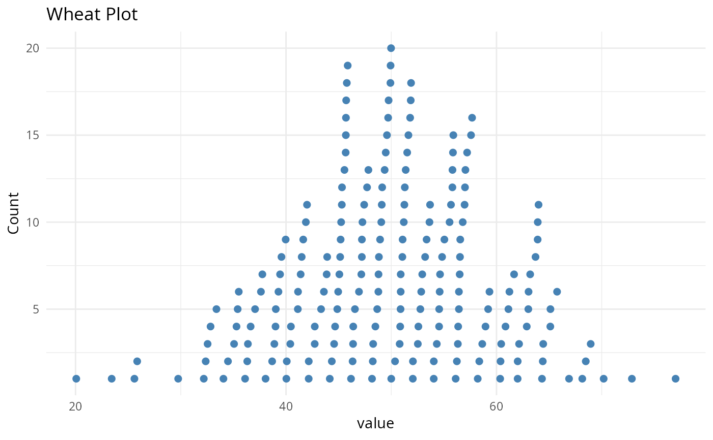

Draw a "wheat plot" (a.k.a. wheat-ear or stacked-dot plot) of a single
numeric variable. Values are binned along the x-axis and, within each
bin, individual observations are stacked vertically as points. The result
is a hybrid between a histogram and a dot plot that keeps every
observation visible, which is useful to inspect the distribution of
per-taxon or per-sample quantities (e.g. taxa_sums() or
sample_sums()).
Usage
wheat_plot(
data,
xvar,
binwidth = NULL,
fill = "steelblue",
point_size = 2,
xlab = NULL,
ylab = "Count",
title = "Wheat Plot"
)Arguments
- data
(data.frame, required) A data frame containing the variable to plot.
- xvar
(required) The (unquoted) name of the numeric column of
datato plot.- binwidth
(numeric, default: NULL) Width of the bins. When NULL, the Freedman-Diaconis rule is used to choose a value automatically.
- fill
(character, default: "steelblue") Colour of the points.
- point_size
(numeric, default: 2) Size of the points.
- xlab
(character, default: NULL) x-axis label. Defaults to the name of
xvar.- ylab
(character, default: "Count") y-axis label.
- title
(character, default: "Wheat Plot") Plot title.
Value
A ggplot object.
Examples
set.seed(42)
wheat_plot(
data.frame(value = rnorm(200, mean = 50, sd = 10)),
value,
binwidth = 2
)
#> Warning: `wheat_plot()` was deprecated in MiscMetabar 0.17.0.
#> ℹ Please use `ggplotpq::wheat_plot()` instead.

# \donttest{
wheat_plot(
data.frame(value = taxa_sums(data_fungi_mini)),
value,
binwidth = 2000
)
 # }
# }